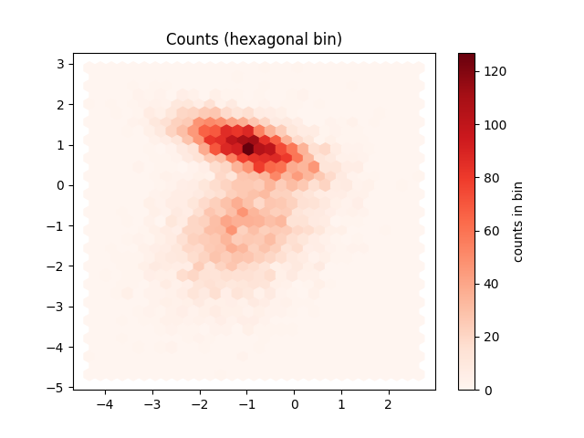
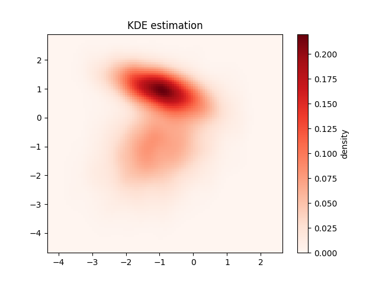

Note
Click here to download the full example code
Histogram 2D¶
See: https://jakevdp.github.io/PythonDataScienceHandbook/04.05-histograms-and-binnings.html
- 
- 
8 9 10 11 12 13 14 15 16 17 18 19 20 21 22 23 24 25 26 27 28 29 30 31 32 33 34 35 36 37 38 39 40 41 42 43 44 45 46 47 48 49 50 51 52 53 54 55 56 57 58 59 60 61 62 63 64 65 66 67 68 69 70 71 72 73 74 75 76 77 78 | # Libraries
import numpy as np
import matplotlib.pyplot as plt
# Specific library
from sklearn.datasets import make_blobs
from sklearn.datasets import make_classification
from scipy.stats import gaussian_kde
# ----------------------------
# Load data
# ----------------------------
# Create data
mean = [0, 0]
cov = [[1, 1], [1, 2]]
x, y = np.random.multivariate_normal(mean, cov, 10000).T
# Create data
data, t = make_classification(n_samples=8000, n_features=2,
n_informative=2, n_redundant=0, n_repeated=0, n_classes=2,
n_clusters_per_class=1, weights=None, flip_y=0.00,
class_sep=1.0, hypercube=True, shift=0.0, scale=1.0,
shuffle=True, random_state=32)
x, y = data[:,0], data[:,1]
# ----------------------------
# Visualize
# ----------------------------
# Plot hist
f1 = plt.hist2d(x, y, bins=30, cmap='Reds')
cb = plt.colorbar()
cb.set_label('counts in bin')
plt.title('Counts (square bin)')
# Plot hex
plt.figure()
f2 = plt.hexbin(x, y, gridsize=30, cmap='Reds')
cb = plt.colorbar()
cb.set_label('counts in bin')
plt.title('Counts (hexagonal bin)')
# Plot density
data = np.vstack([x, y])
kde = gaussian_kde(data)
# Parameters
xmin, xmax = min(x), max(x)
ymin, ymax = min(y), max(y)
# evaluate on a regular grid
xgrid = np.linspace(xmin, xmax, 100)
ygrid = np.linspace(ymin, ymax, 100)
Xgrid, Ygrid = np.meshgrid(xgrid, ygrid)
Z = kde.evaluate(np.vstack([
Xgrid.ravel(),
Ygrid.ravel()
]))
# Plot the result as an image
plt.figure()
plt.imshow(Z.reshape(Xgrid.shape),
origin='lower', aspect='auto',
extent=[xmin, xmax, ymin, ymax],
cmap='Reds')
cb = plt.colorbar()
cb.set_label("density")
plt.title("KDE estimation")
# Show
plt.show()
|
Total running time of the script: ( 0 minutes 3.272 seconds)